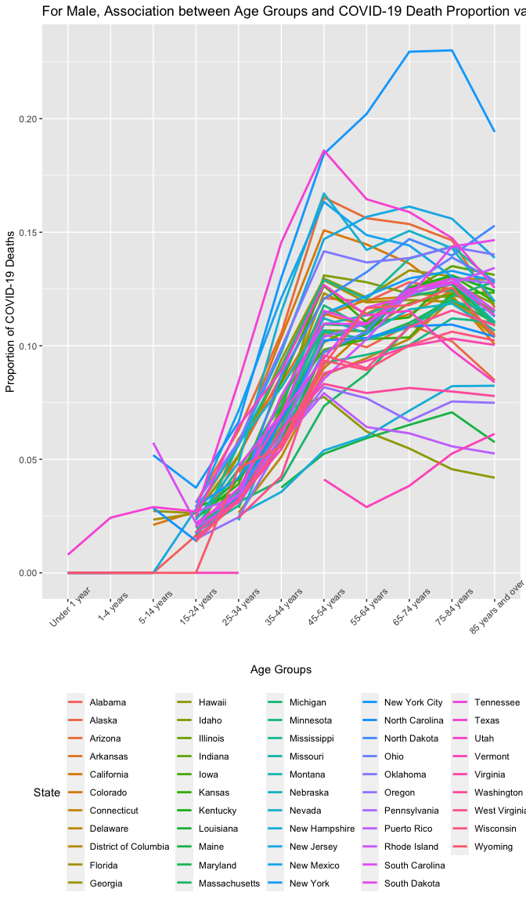
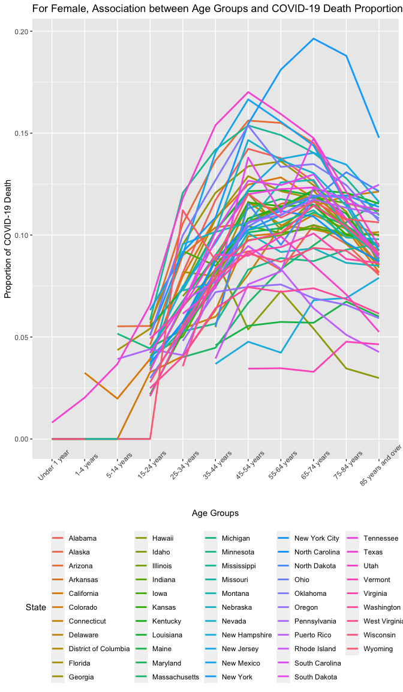

Older people have higher rates of comorbidities and may experience more inflammatory responses. Therefore,the COVID-19 deaths proportion of total deaths for the elderly will be higher than the younger. Herein, we aimed to explore the association between age and the deaths involving COVID-19.
The data set in this study comes from the Nation Center for Health Statistics, which contains death data from all residents in the USA. The data set keep updated. I used the date set from 01/01/2020 to 11/19/2022. If you want to reproduce the study, you can assign the new period you want. The data set I used contains 5 different attributes, of which information is provided about each column below:
COVID-19 Deaths: The number of people dying from COVID-19
Total Deaths: The total number of deaths
Age Group: Under 1 year, 1-4 years, 5-14 years, 15-24 years, 25-34 years, 35-44 years, 45-54 years, 55-64 years, 65-74 years, 75-84 years, 85 years and over
Sex: Female, Male
State: all US states
For this study, we are interested in What is the association between age groups and COVID-19 deaths proportion of total deaths?
Secondary Analyses:
Is the association between age groups and COVID-19 deaths proportion of total deaths sex-specific?
Does the association between age groups and COVID-19 deaths proportion of total deaths vary from US states?
I did some data wrangling at the beginning. I used the data from 01/01/2020 to 11/19/2022. When I checked the value of Age groups, we found some of age groups are overlapped. So I removed those overlapped age groups and keep those independent age groups. I calculated the proportion of COVID-19 deaths, using COVID-19 deaths divide by total deaths.
I did some data visualization to explore the association. I created a table of average COVID-19 deaths proportion in different age groups to check whether there is a trend between COVID-19 deaths proportion and age groups. Then, I made a line-plot of COVID-19 deaths proportion by gender to analyze the confounding of sex. Observing scatter-plot and choropleth map of COVID-19 deaths proportion by states, I think I should explore the association by states. By plotting the spaghetti-plot of COVID-19 deaths proportion versus age groups by states, I got the more specific the association between age groups and COVID-19 deaths proportion of total deaths.
| Age Groups | COVID-19 Deaths Proportion | Number of COVID-19 Deaths | Number of Total Deaths |
|---|---|---|---|
| Under 1 year | 0.0069 | 385 | 56066 |
| 1-4 years | 0.0194 | 208 | 10709 |
| 5-14 years | 0.0255 | 427 | 16742 |
| 15-24 years | 0.0275 | 2853 | 103750 |
| 25-34 years | 0.0542 | 11859 | 218937 |
| 35-44 years | 0.0896 | 29056 | 324271 |
| 45-54 years | 0.1228 | 69299 | 564256 |
| 55-64 years | 0.1205 | 153800 | 1276536 |
| 65-74 years | 0.1235 | 243333 | 1970426 |
| 75-84 years | 0.1181 | 278052 | 2355170 |
| 85 years and over | 0.1029 | 283009 | 2749515 |
Basically, there is a trend of age groups and COVID-19 deaths proportion. With the increase of age, the probability of dying from COVID-19 get higher. But after 75 years old, this probability goes down.
From this line chart, for both female and male, the proportion of COVID-19 deaths grow slowly before 15 years old. From 15 to 54, the proportion increase rapidly. From 54 to 84, the proportion reach the peak. And after 84 years old, the proportion of COVID-19 deaths go down.
For female, the growth of proportion of COVID-19 deaths is faster in teenagers. And the decrease of proportion of COVID-19 deaths start earlier than male.
The size of bubbles represent the COVID-19 Death Proportion for different states. For example, New York City has the highest COVID-19 Death Proportion. It maybe depend on the high population density. So people in New York will be easier to be infected with COVID-19. We’d better stratify our data by states. So we can assume people in certain states can have a same risk to be infected with COVID and have a same vaccination status.
And sample size of death data also vary from states. California has the most sample size, so California will have the much power to affect our result.
In this choropleth map, dark blue means the state has a relatively high COVID-19 death proportion. We can see the COVID-19 death proportion have significant differences in states.


From those two spaghetti plots, we find the increase rate of COVID-19 deaths proportion for male is fast from 15 years old to 54 years old. When age beyond 55 years, the increase rate of COVID-19 deaths proportion get slow. For female, there is no obvious break point of the increase rate of COVID-19 deaths proportion. At about 55 years old, the change of COVID-19 deaths proportion converted from increase to decrease.
There is a association between patients’ age groups and the proportion of COVID-19 deaths. With the increase of patients’ age, the proportion of COVID-19 deaths get higher. However, this relationship was sex-specific. The increase rate of COVID-19 deaths proportion for male is fast from 15 years old to 54 years old. When age beyond 55, the increase rate of COVID-19 deaths proportion get slow. For female, there is no obvious break point of the increase rate. Around 55 years old, the change of COVID-19 deaths proportion converted from increase to decrease.